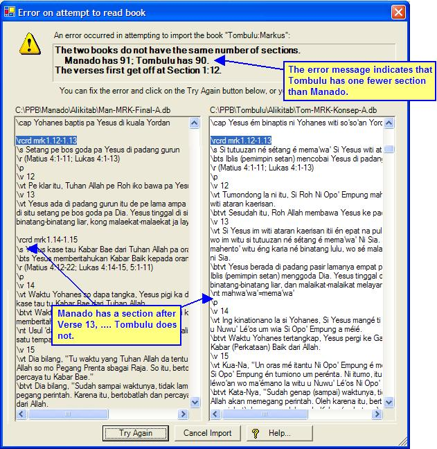

OurWord Help
Import
Error: Structure Section Miscount
This error occurs when the the book being imported does not have the same number of sections as the front translation.
OurWord requires sections to be identical both in number, and in which verses are in a given section. If you wish your translation to differ from the front with regard to sectioning, then you will need to use some other editor.
An example of this error:

The cure is to look at the front translation, and add or remove sections until the two are identical.
After you make the correction, click on the Try Again button to instruct OurWord to resume importing the book; or alternatively you can click on Cancel to abandon the import and fix it in some other editor.
Updated as of Version 1.0.